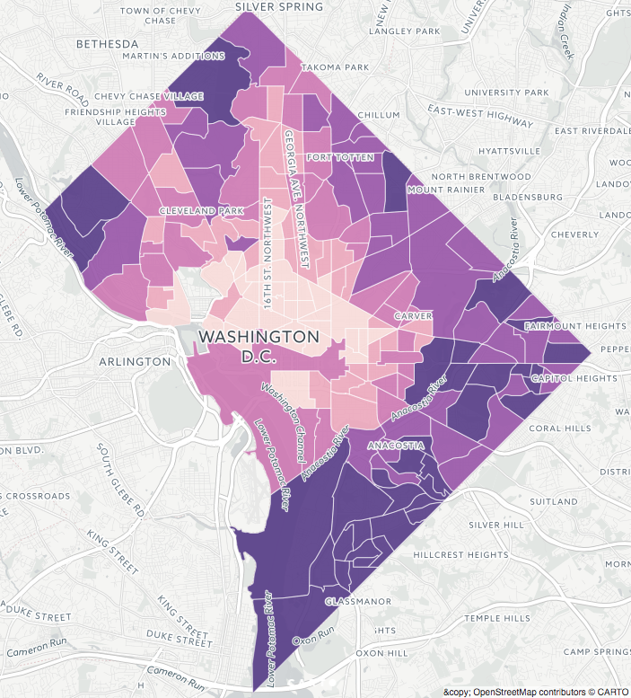

Thinking About Algorithmic Transparency
Jennifer A. Stark, Ph.D.
Nicolas Diakopoulos, Ph.D.
Why Investigate?
•
•
•
Black-Box Decisions
No Recourse
Blind Acceptance, "Not our fault"
Ethics???
What are Engineers told? What information are they given?
Potential Findings
Find algorithm/organisation at fault
Find algorithm reveals embedded societal disparities
Typically the two are tightly related
Difficult to identify a solution
"Because with Uber there is no destination discrimination — no refusals based on what you look like or where you live."
– Uber Under the Hood, Medium
Dataset #1:
– Via Uber's Developer API late 2016
Average UberX estimated wait times
- Overall
- During surge only
- During non-surge
- Just before surge (trigger)
Percent time spent surging (Proportion)
Average Surge price multiplier per census tract
UberX Overall Average Wait Times

What information can we gather to reproduce wait times across D.C.?
Information to Explore - Census
Population => density
Poverty => %
Median Household Income
Race / Ethnicity => dichotomised to % POC
Run multiple regression analysis.
“Cycles, Systems, & Loops”
Additional Information:
Transient Population (where people go)
- Proxy: Non-violent Crime => 5yrs, density
- Proxy: Google Places API => density
Unbanked (no credit card = barrier for Uber App)
Demand (Proxy: Taxi data)
Risk - Proxy: Violent Crime => 5yrs, density
Spatial Regression - spatial adjacency
Interpretation
Wait times reflect questionable ethics (bad Uber!?)
- Ineffective control of drivers
Wait times reveal disadvantaged communities (bad Government!?)
Journalistic Outcomes
Uber policy? – Change algorithm? Change driver-incentives? Make data available?
Government policy? – Ban Uber? Regulate Uber? Invest in those communities so they can participate in the technological future
Public attitude? – informed decisions
Why?
•
•
•
Black-Box Decisions
No Recourse
Blind Acceptance
Ethics?
And also …
Encourage better documentation and code commenting (good for future you and colleagues)
Build trust with readers
Educational
Catalyse new projects